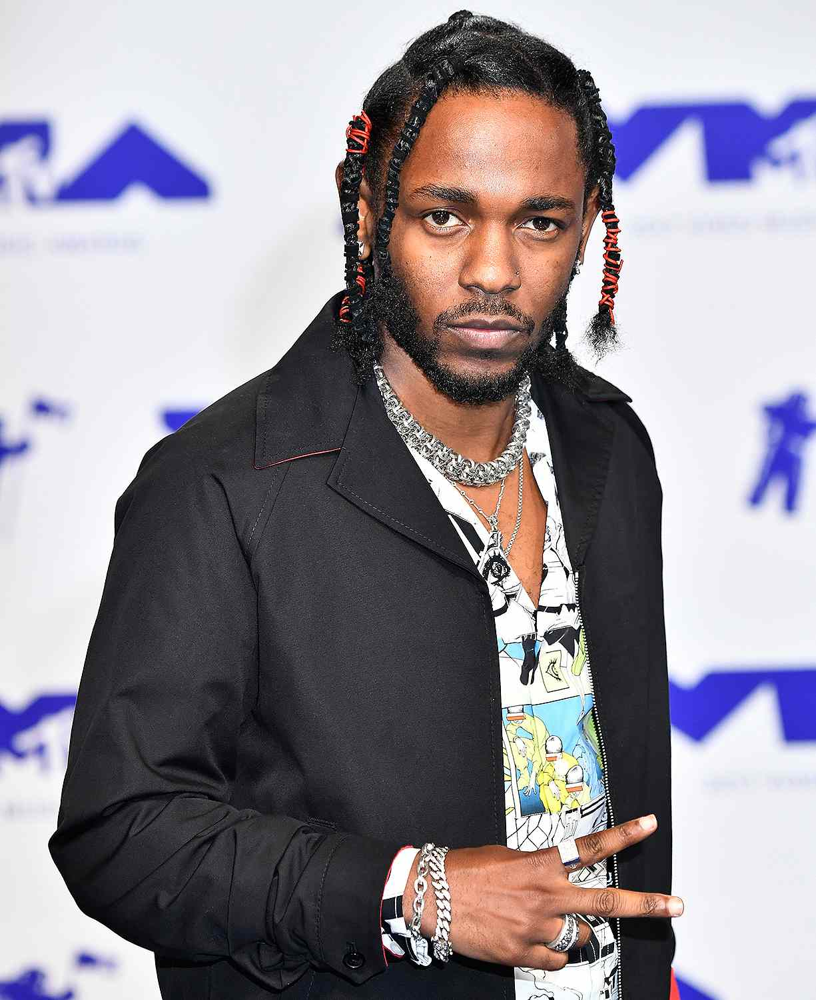

Welcome to the Kendrick Lamar fan page. Feel free to look around and learn more about the incredible, grammy award winning artist from Compton, Ca. We have a bar above where you can sign up to get news updates on the artist to see what he's up to next. There is also a tour dates tab, where you can keep up with upcoming tours or festival/venues that K Dot will be making a musical appearance. And lastly, a Gallery tab, so you can see the photos from the performances and a couple of fa photos at the venue to show how lit the fans were. So have fun getting to know our favorite Good kid in a mAAd city....
About Kendrick...

Kendrick Lamar Duckworth (born June 17, 1987) is an American rapper and singer-songwriter. Often regarded as one of the greatest rappers of all time, he is the only musician outside of the classical and jazz genres to be awarded the Pulitzer Prize for Music. Lamar's work has been recognized for its continual versatility, characterized by his melodic cadences, cinematic songwriting, and striking visual presentations. His regular infusion of political criticism and social commentary influenced a rise of social consciousness within his generation.
Kendrick's Discography
Lamar began releasing music under the stage name K.Dot while he was attending high school. He signed with Top Dawg Entertainment in 2005, where he co-founded the hip hop supergroup Black Hippy. Following the success of his alternative rap debut album Section.80 (2011), Lamar secured a joint contract with Aftermath Entertainment and Interscope Records. He rose to prominence with his gangsta rap-influenced second album Good Kid, M.A.A.D City (2012) and its top 40 singles "Swimming Pools (Drank)", "Poetic Justice" and "Bitch, Don't Kill My Vibe". It is the longest-charting hip hop studio album on the Billboard 200, spending over ten consecutive years on the chart.
Inspired by a visit to South Africa, Lamar embraced jazz and G-funk styles on his third album, To Pimp a Butterfly (2015). It became his first of four consecutive number-one albums in the U.S., and is one of the most critically acclaimed albums of the 2010s decade. His collaboration with Taylor Swift on the remix of "Bad Blood" garnered his first number-one single on the Billboard Hot 100. Lamar's critical and commercial success continued with his R&B and pop-leaning fourth album Damn (2017), yielding his second chart-topping single "Humble". He curated and executive produced the soundtrack album for the film Black Panther (2018), and departed from TDE with his double album Mr. Morale & the Big Steppers (2022); both projects broke various records.
Lamar has received various accolades throughout his career, including one Primetime Emmy Award, one Brit Award, four American Music Awards, six Billboard Music Awards, 11 MTV Video Music Awards (including two Video of the Year wins), 17 Grammy Awards (the third-most won by a rapper), and 29 BET Hip Hop Awards (the most won by any artist). Time listed him as one of the 100 most influential people in the world in 2016. Two of his concert tours, the Damn Tour (2017–2018) and the Big Steppers Tour (2022–2023), are amongst the highest-grossing rap tours in history. Three of his works were included in Rolling Stone's 2020 revision of the 500 greatest albums of all time.
Next Moves for Kendrick Lamar
Outside of music, Lamar co-founded the creative company PGLang and ventured into filmmaking with his creative partner, Dave Free. He has worked with various charities and advocates for racial equality and mental health awareness.
Lamar has also partnered with several fashion designers and outlets. As a brand ambassador, he was involved with designing sneakers for Reebok and Nike. He has developed working relationships with Grace Wales Bonner and Martine Rose; through their respective eponymous brands, they have dressed Lamar for several public events. For her Autumn/Winter 2023 collection, Twilight Reverie, Lamar worked with Bonner to create the show's soundtrack with Sampha and Duval Timothy. Through PGLang, he composed the score and co-designed the stage for Chanel's Spring/Summer 2024 haute couture collection.